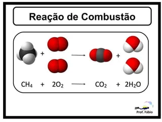
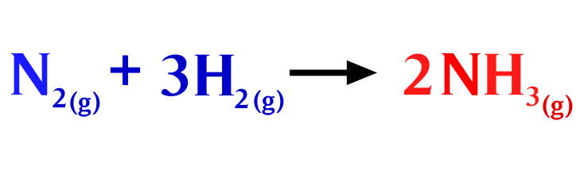
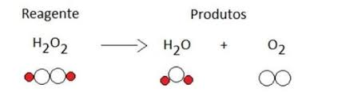
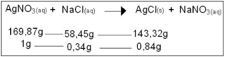

As reações químicas são processos fundamentais que ocorrem na natureza e na indústria, desempenhando um papel crucial na transformação da matéria. Essas reações envolvem a quebra e a formação de ligações químicas entre átomos e moléculas, resultando na criação de novas substâncias com propriedades distintas. Para compreender melhor esse fenômeno, é possível explorar quatro exemplos de reações químicas comuns.
A combustão do metano é um exemplo de reação exotérmica em que o metano reage com o oxigênio para formar dióxido de carbono (CO₂) e água (H₂O). A equação química é representada da seguinte forma: CH4 (g) + 2 O2 (g) → CO2 (g) + 2 H2O. Essa reação libera energia na forma de calor e luz, sendo um processo comum em fogões a gás e motores de combustão.
A síntese de amônia é um exemplo de reação em que nitrogênio (N₂) e hidrogênio (H₂) reagem para formar amônia (NH₃). A equação é expressa da seguinte maneira: 3 H2(g) + N2(g) ⇌ 2 NH3(g). Essa reação é essencial na produção de fertilizantes, já que a amônia é um componente crucial para o crescimento de plantas.
A decomposição da água é um exemplo de reação em que a água se decompõe em hidrogênio e oxigênio por meio da eletrólise. A equação pode ser representada da seguinte maneira: 2 H2O → 2 H2 + 1 O. Esse processo é comumente utilizado na obtenção de hidrogênio para diversas aplicações, incluindo combustíveis alternativos.
A reação de precipitação ocorre quando íons em solução se combinam para formar um precipitado insolúvel. Um exemplo é a reação entre íons de prata (Ag⁺) e íons de cloreto (Cl⁻) para formar cloreto de prata (AgCl):Ag+(aq) + Cl-(aq) → AgCl(s). Nessa reação, o AgCl forma um sólido insolúvel que precipita da solução.
